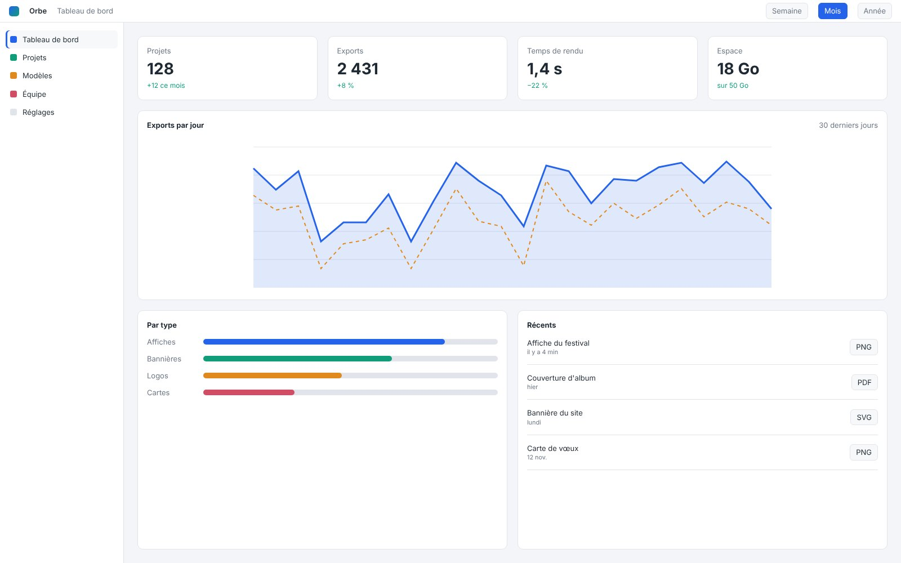
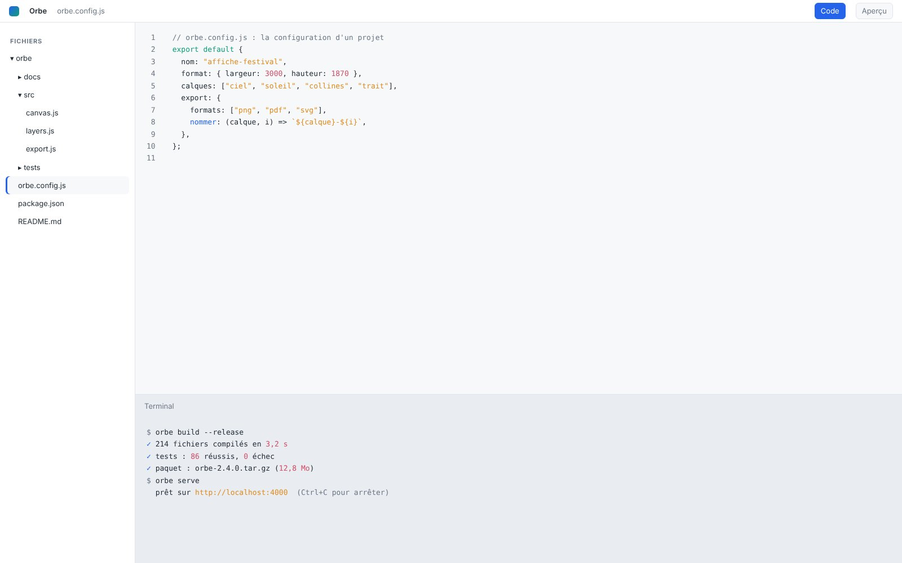
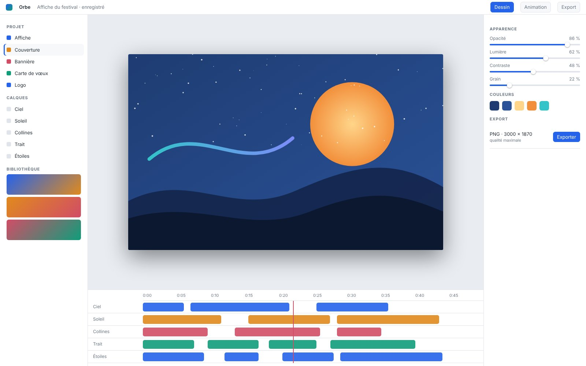
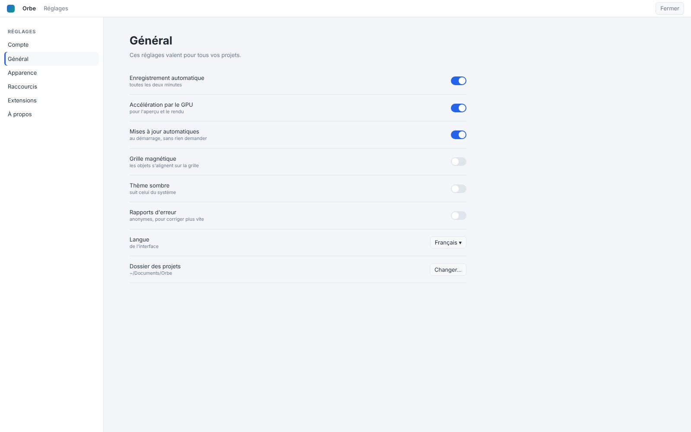

{{SITE}} est un projet libre : petit, rapide, et écrit pour être compris. Le noyau, les services, l'interface et les applications de base tiennent dans un seul dépôt, que l'on construit en quelques minutes.

Pensé pour un vrai matériel, simple, et documenté : chaque partie a sa page dans la documentation.
Le cœur tient en quelques milliers de lignes : on peut le lire en un week-end, et le comprendre.
Le projet sait se recompiler à l'identique : chaque version vérifie la précédente.
Fenêtres, espaces de travail et polices nettes, sans rien qui clignote.
Les formats courants, les clés USB, le réseau local et les serveurs habituels.
Le rendu passe par le GPU quand il y en a un, sinon il reste fluide sans.
Ce qui n'est pas livré s'installe depuis un dépôt signé, en une commande.
Une couche de compatibilité sert à porter ce qui existe déjà, sans en faire un but.
Un compilateur, un éditeur, un terminal complet et les outils habituels.
Un traitement de texte, un tableur, des présentations et un navigateur.
Des jeux livrés, et des émulateurs pour les classiques.
Les applications principales, telles qu'elles sont aujourd'hui. Cliquez pour agrandir.



Tout se construit depuis les sources, en quelques minutes, avec les outils fournis.
$ git clone https://exemple.org/{{SITE}}.git $ cd {{SITE}}
$ ./build.sh run# remplacez sdX par votre carte : elle sera effacée $ ./build.sh image /dev/sdX
docs/CONSTRUIRE.md.